Student Project · BITS Pilani Goa
Project Kratos is a fully student-driven Mars Rover team at BITS Pilani Goa. The rover is designed for autonomous terrain traversal, robotic manipulation, and onboard life detection — built to compete in international rover challenges against university teams from around the world. I led the Controls subsystem, responsible for everything from path planning and motor control to the software–hardware interface of the rover.
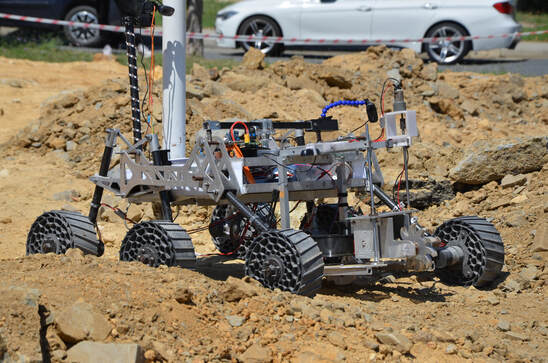
Anatolian Rover Challenge 2022 · Istanbul, Turkey
2nd place globally. Won the Best Autonomous & Controls vertical and the Best Science vertical.
International Rover Challenge 2023 · Bangalore, India
Excellence Award for Overall Performance. 4th place overall.
University Rover Challenge 2022 · Utah, USA
19th place globally in our first international competition — a strong debut for a relatively new team.
Implemented the Stanley Controller for smooth, continuous path following — the same algorithm Stanford used to win the DARPA Grand Challenge. Unlike naive point-to-point navigation, Stanley continuously corrects both heading error and cross-track error, allowing the rover to follow curved paths accurately at speed. Achieved waypoint tracking accuracy within 5 cm.
The implementation is open source: github.com/anshulraje/Stanley-Controller
Integrated a YOLOv3 model trained on a custom dataset for real-time obstacle detection during autonomous navigation. The detections fed directly into the path planner to trigger avoidance manoeuvres.
Developed Forward and Inverse Kinematics algorithms from scratch to control a 5-DOF robotic arm mounted on the rover. The arm was used for manipulation tasks such as collecting soil samples and operating levers — core challenges in international rover competitions.
Implemented A* path planning with a PID controller for structured environment navigation, used as a complementary planner to the Stanley Controller for grid-based scenarios.
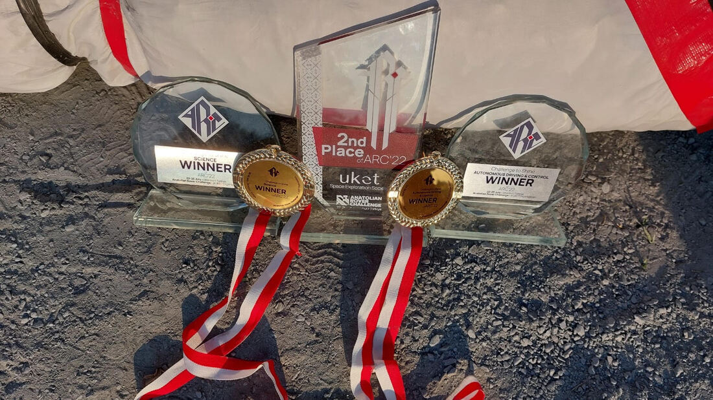
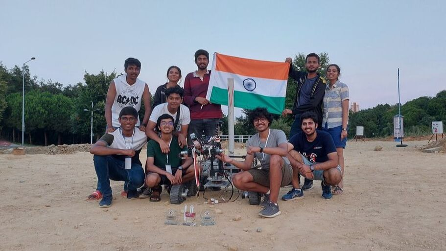

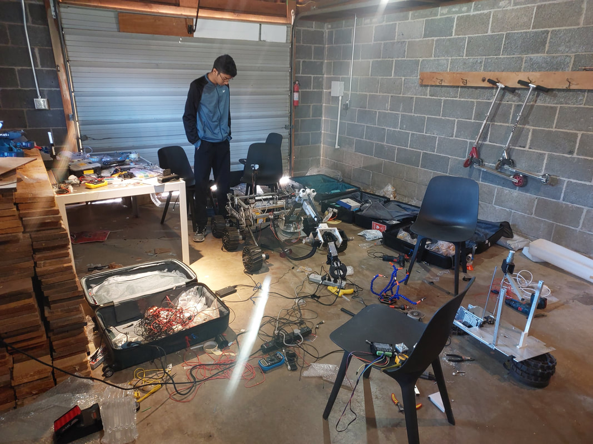
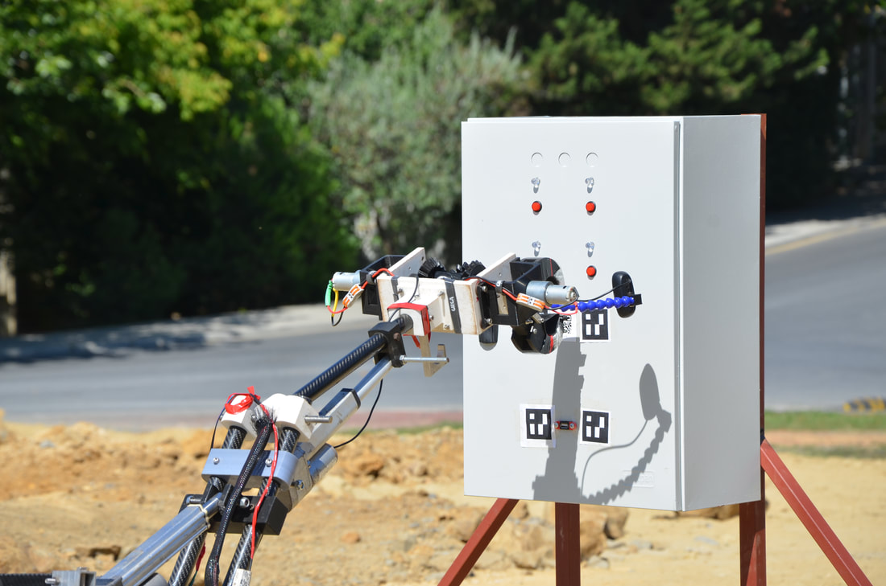

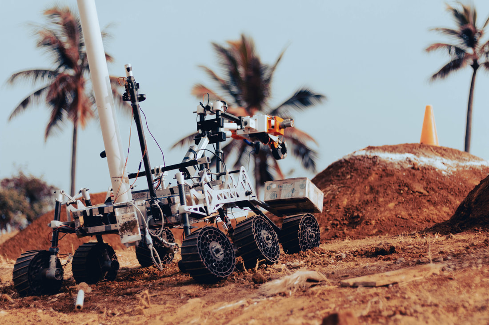

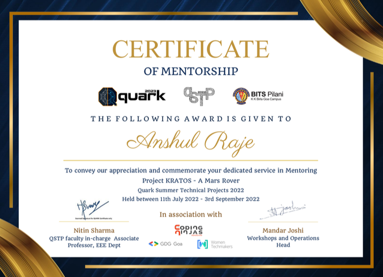
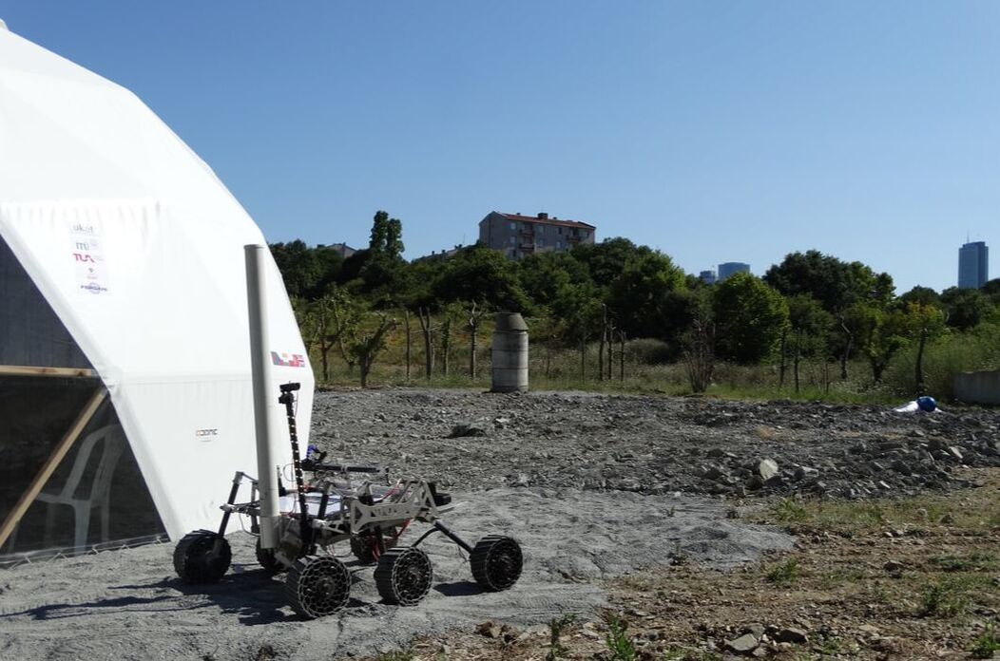

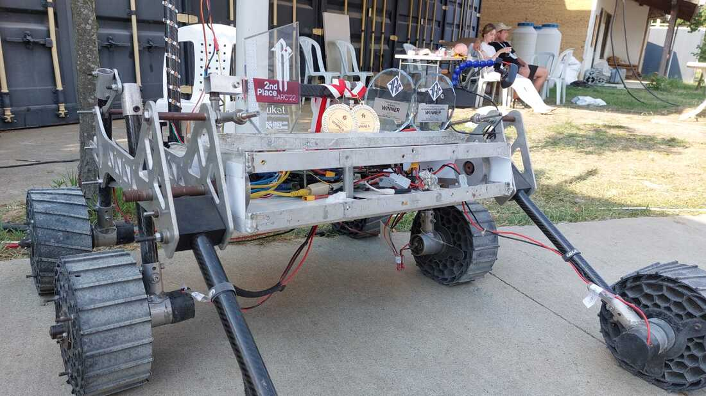
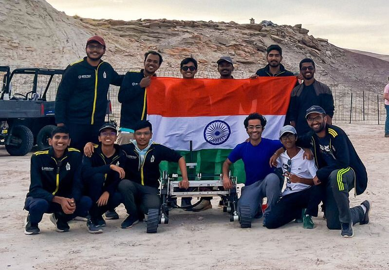

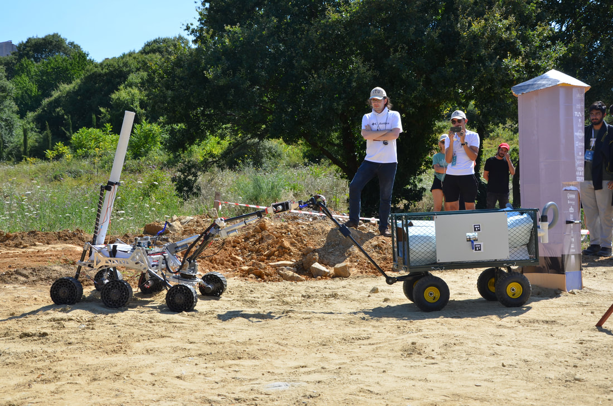

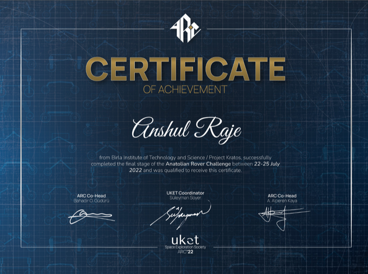
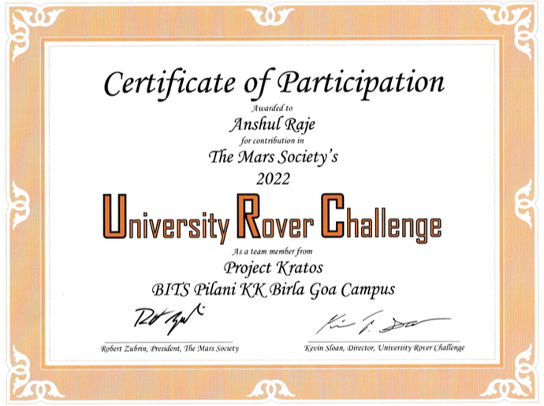
Team Leadership. Led the Controls subsystem as Controls Lead — managing timelines, coordinating with the mechanical and electronics subsystems, and making technical decisions under competition deadlines. Learned that getting a rover to work is as much about people coordination as it is about code.
Mentorship — QSTP. Mentored junior students through BITS Goa's Quark Summer of Tech Programme (QSTP), introducing them to ROS, robot modelling, and autonomous systems. Seeing someone get their first robot moving in simulation is genuinely one of the more satisfying things.
Cross-disciplinary Collaboration. Kratos is a multi-disciplinary team — CS, electronics, and mechanical all working on the same robot. Learning to communicate across disciplines, agree on interfaces, and ship something that actually works together was probably the most valuable thing I took away from this project.